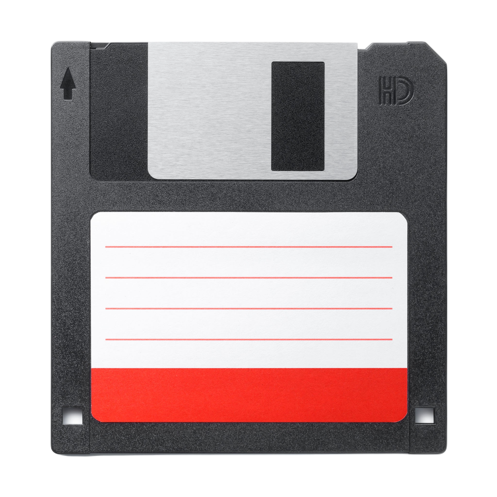
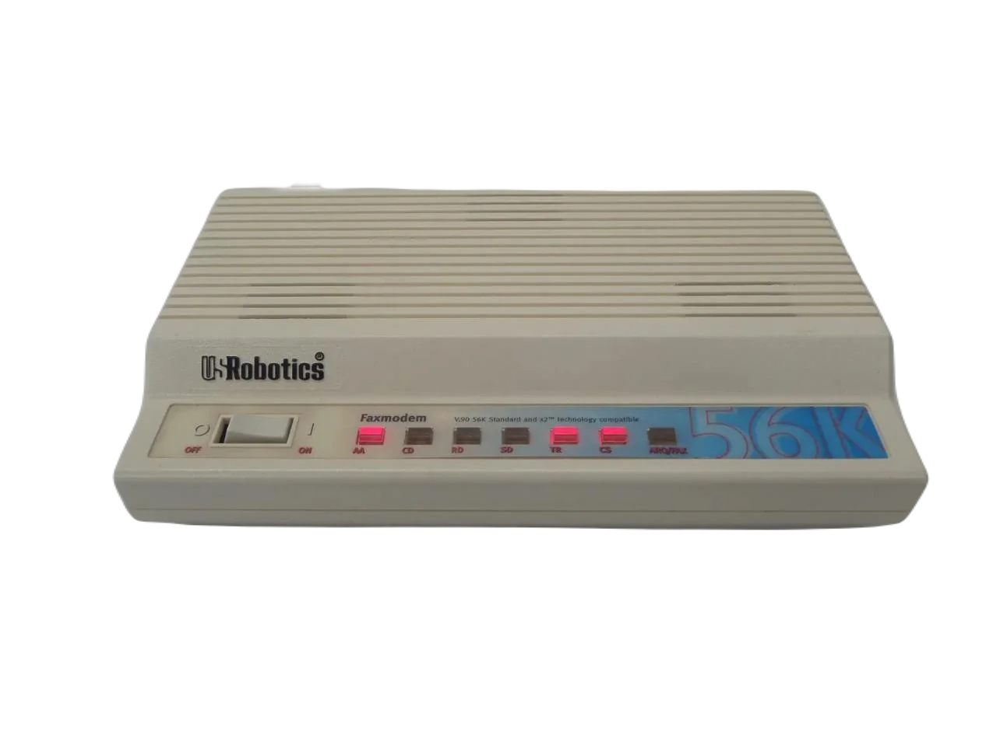
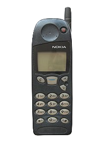
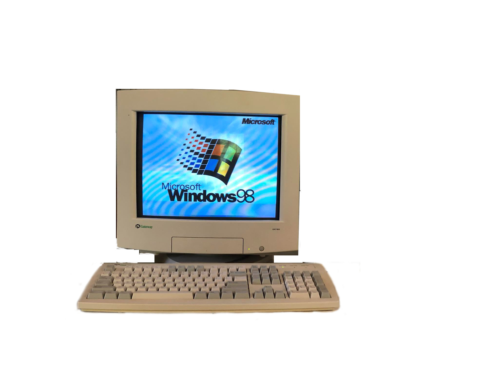
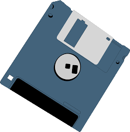
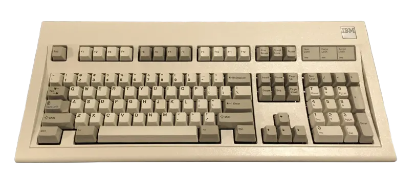
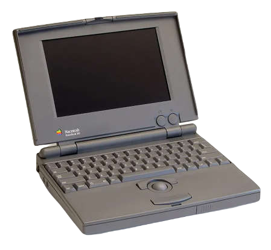
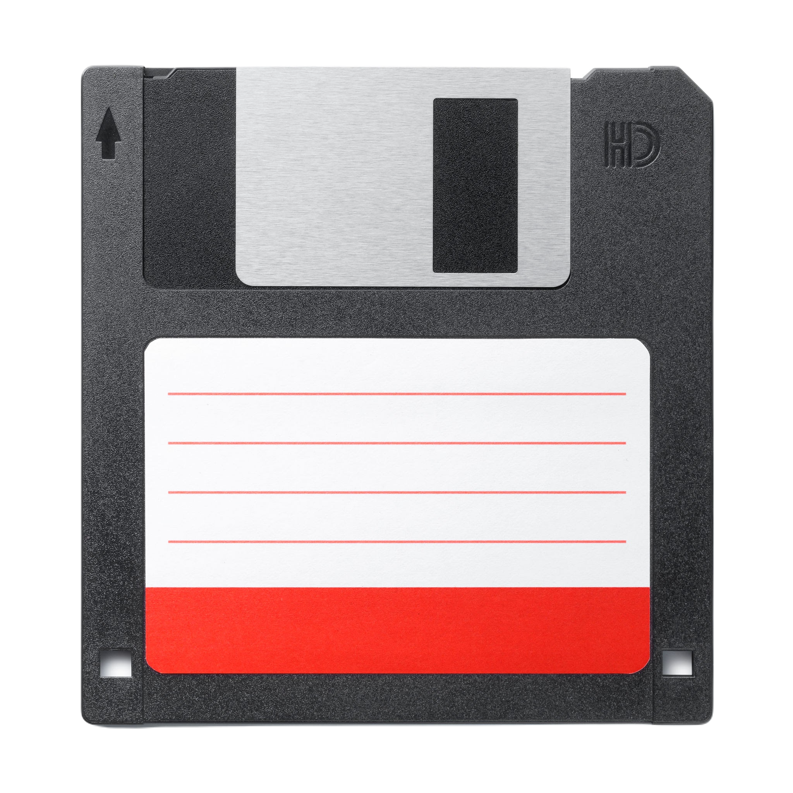
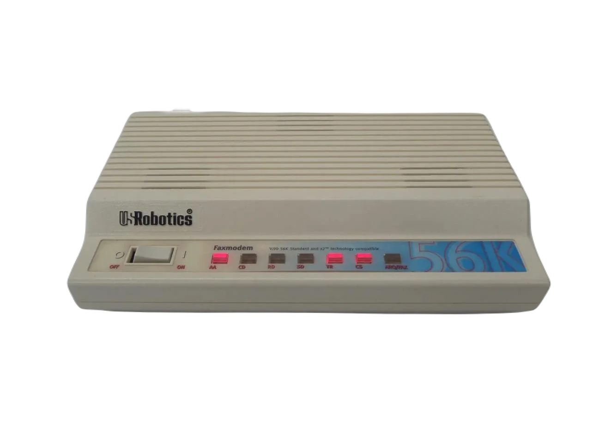
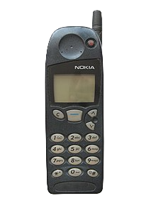
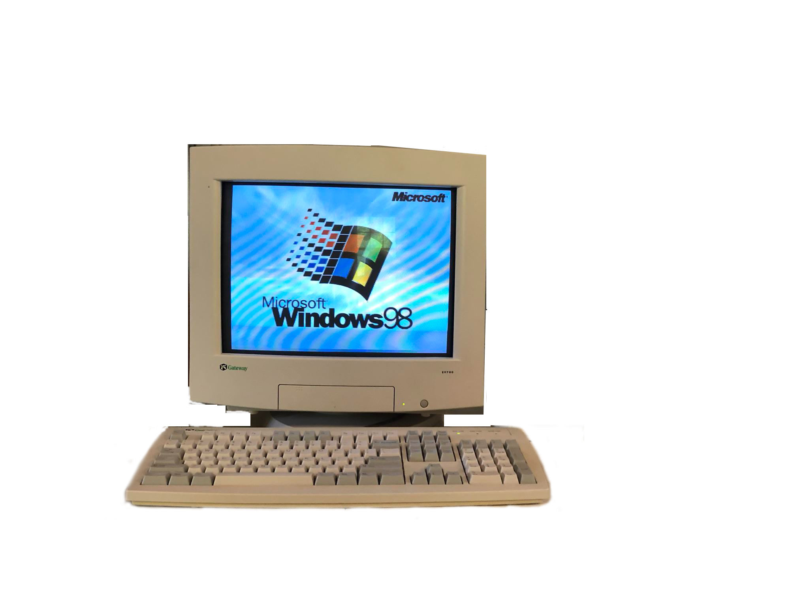
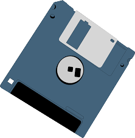
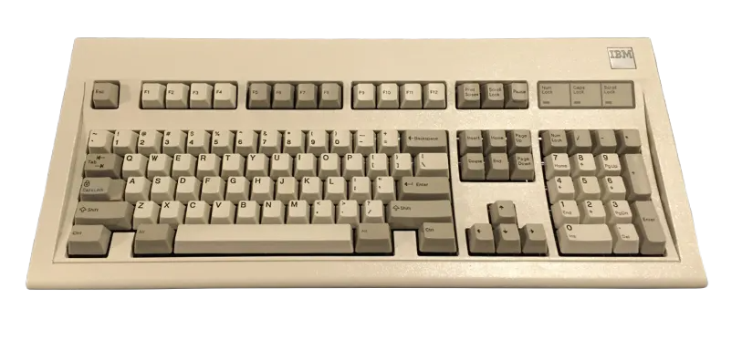
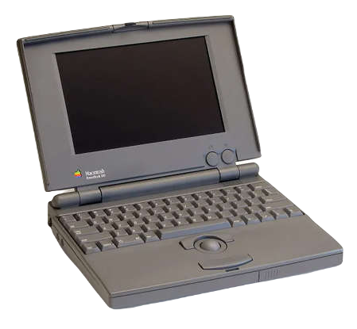
In a time long before social media and cellphones, connecting with friends online meant logging into an internet chat room or forum. Its charm lay in its simplicity and unhurried pace, letting you connect with people from around the globe on your own terms and disconnecting. In today's world of relentless notifications and constant chatter, the idea sounds archaic and even insane, however, it's a beautiful thing that should be celebrated and normalized again. Which leads us to ChatDOS.
The philosophy behind ChatDOS is simple: break free from being confined to a smartphone and rediscover the beauty of the Dotcom days and having your own peace. Back then, you used different devices for games, movies, music—even phone calls—creating unique, focused experiences. Today, everything fits in your pocket, and we're constantly bombarded with distractions. So, grab your favorite beverage, kick back, and chat like it's 1999 and remember, just because it's old doesn't mean it has to be boring. Reject modernity and help create a new web era with us.
ChatDOS is a no-frills, hassle-free chatroom that lets you jump right into conversation! No sign-ups or downloads required.
Just choose a username and you're instantly connected!
Whether you're here to meet new people or reconnect with old friends, ChatDOS offers a refreshing and new experience, allowing users to talk to their friends and disconnect
from them, ensuring a notifcations free environment for their peace of mind.
Note: This website is not mobile friendly, this is done intentionally to get rid of the temptation to look on your phone.
If you try to use this website on your phone you'll have a bad time.
Real On Your Own-Time Chat: Enjoy an authentic, distraction-free chatting experience that transports you back to the golden era of online communication.
Interactive Interface: Engage with draggable windows, bouncing icons, and dynamic marquee texts that infuse playful 90s vibes into every interaction.
Simplicity Over Complexity: Embrace a streamlined experience without overwhelming integrations or constant notifications.
Customization & Fun: Engage with intuitive UI elements that adapt to your interactions, ensuring every chat feels lively and fresh.